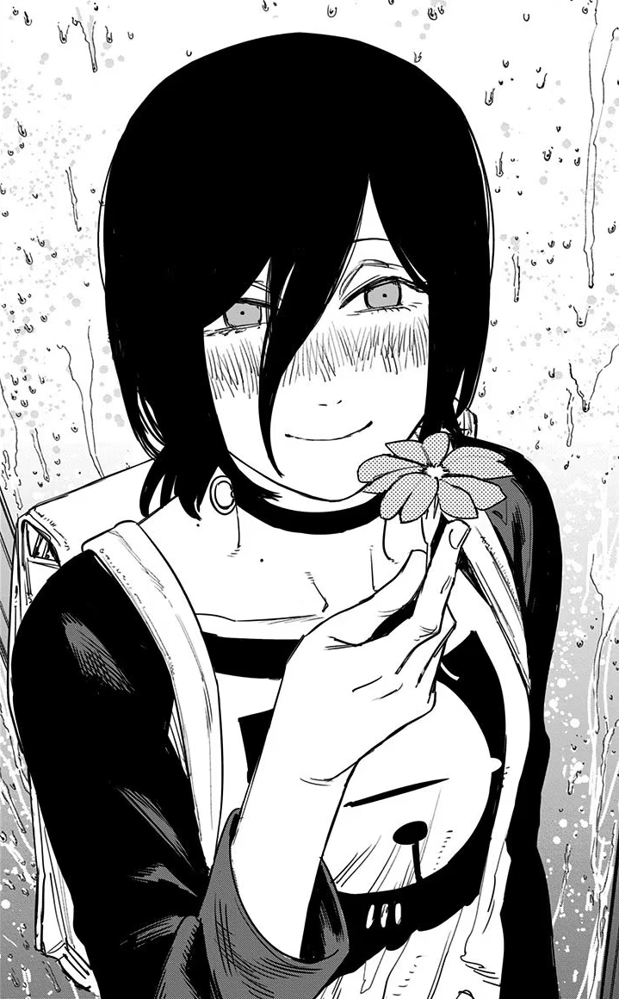
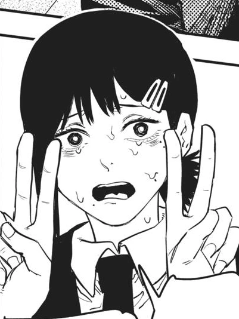

About Hair Day
Learn more about our founders, our dedicated team of styling experts and the journey to creating Madison's premier "treat yourself" sanctuary.
Our Story
Hair Day was born out of a shared dream between Makima, a certified master colorist and Reze, a trend-setting hair stylist. Having worked in traditional salons for years, they realized they wanted to build something different: a warm, relaxed, boutique environment where clients could truly escape the daily rush.
In 2026, they established Hair Day in the heart of Madison, Wisconsin. Every detail, from the calming earthy tones to the carefully curated styling products, was designed to cultivate a genuine "treat yourself" sanctuary.
Today, our salon features a close-knit group of seven experts: two master stylists, three custom colorists, an expert manicurist, and a professional makeup artist, all working together to bring your unique style to life.

Meet the Founders & Team

Makima
Specializing in custom balayage, vivid pastel transformations and color corrections. Makima believes that hair color is a direct expression of individual personality.

Reze
With over a decade of haircutting experience, Reze is known for on-trend texture cuts, framing styles and experimental precision designs that look effortless.

Kobeni
Providing detailed custom manicures, nail styling art and flawless event makeup. Kobeni ensures you look and feel absolute best for any special occasion.